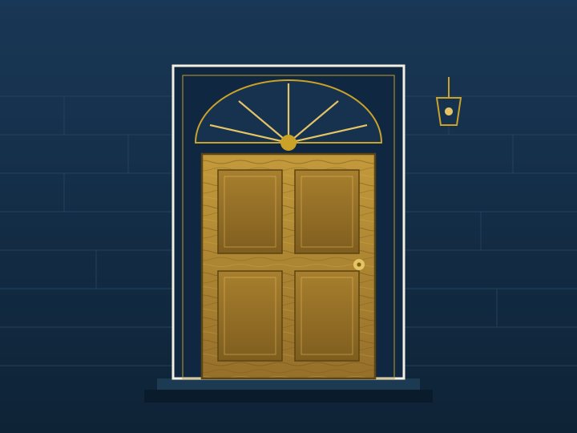

Heritage front door restoration
Cooks Hill
An 1890s terrace door stripped back, re-jointed and rebuilt around its original arched fanlight. New fielded panels were milled from recycled Hunter hardwood and the brass furniture restored rather than replaced.
Timber recycled tallowwood · Finish hand-rubbed oil